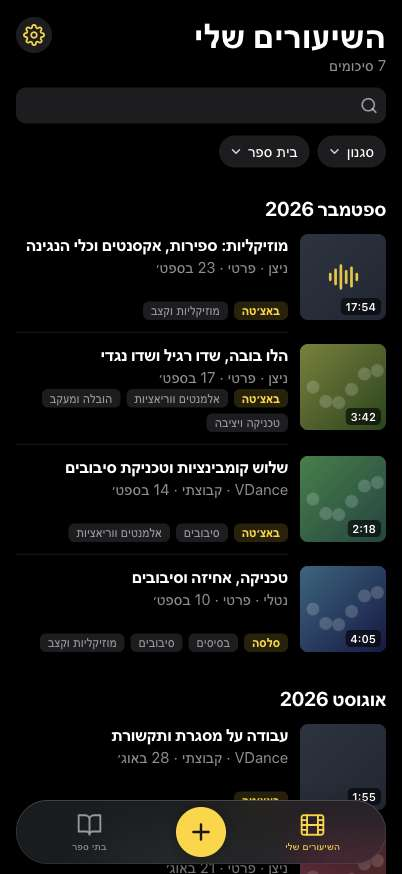
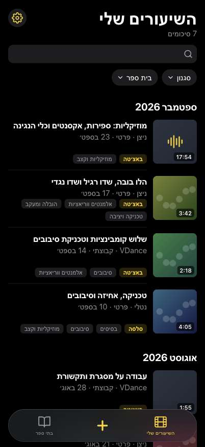
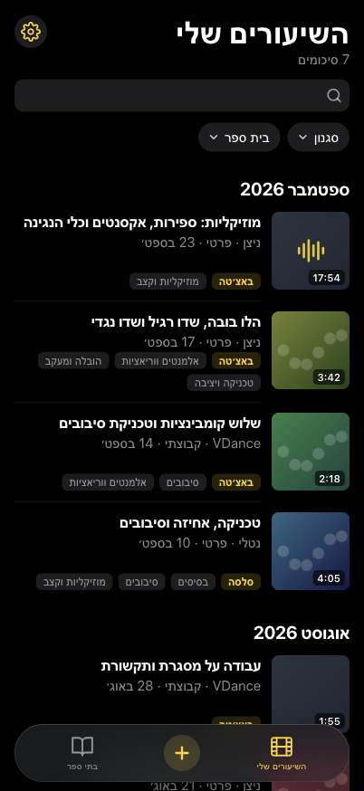

כפתור הפלוס בסרגל התחתון
הנוכחי לעומת שלוש חלופות. א׳: רק פלוס צהוב, בלי עיגול, 30px. ב׳: פלוס צהוב גדול יותר, 36px. ג׳: עיגול קטן ועדין (40px) עם פלוס צהוב.
רק הסרגל, בגודל אמיתי

נוכחי

א׳ · פלוס צהוב בלבדההמלצה שלי
ב׳ · פלוס צהוב גדול

ג׳ · עיגול קטן ועדין
א׳ במצב בהיר
ג׳ במצב בהיר
המסך המלא
נוכחי
א׳
ב׳
ג׳